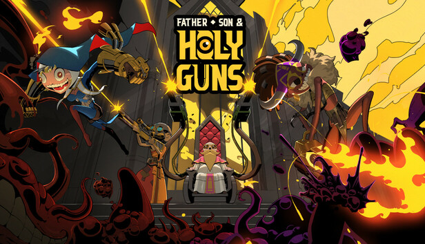
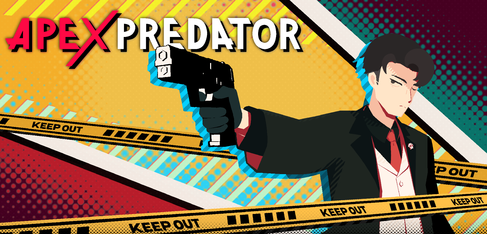
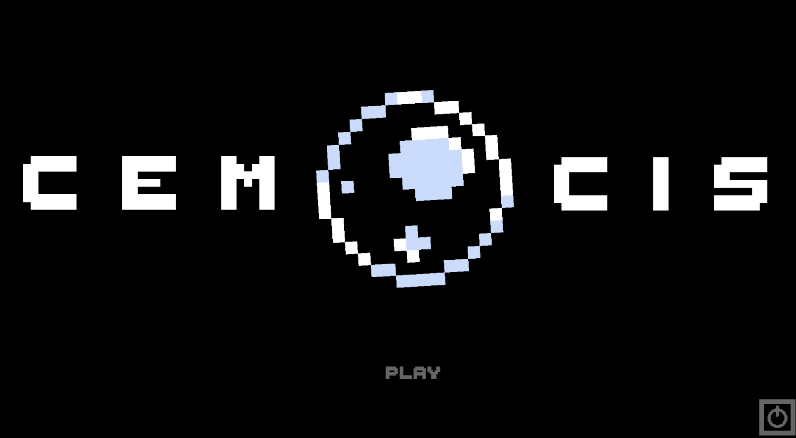
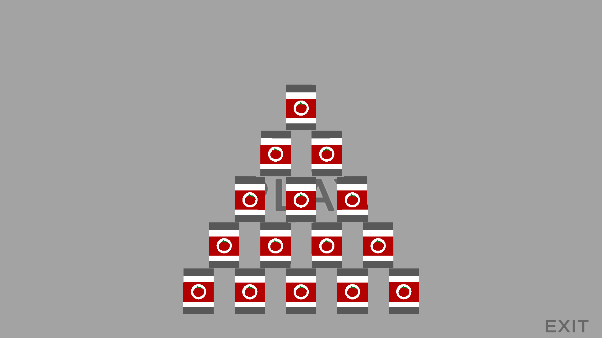
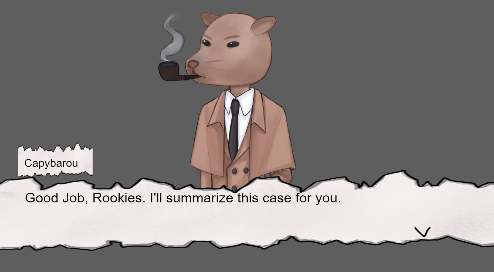

Welcome
Hi, I’m Pawis Kitsanawan, a Game Designer Specializing in Gameplay and level design. I focus on enhancing player flow and interaction through prototyping and close collaboration with team members.
I Look forward to working with you!
Click the images to check out my work.
Internship Projects

Father, Son & Holy Guns
Gameplay Designer & Level Designer (8 Months Internship)
Completed an 8 month internship as a Game Designer at Jumbojumps Co., contributing to the Father’s Son and Holy Gun projects. Focused on level design, enemy behaviors, and gameplay design while collaborating closely with the development team.
Personal Projects

Apex Predator
Game Designer, Level Designer
Worked on a personal team project, APEX PREDATOR, with the Red Legacy team as a Game Designer. Contributed to level design, overall gameplay design and focusing on player flow, pacing and engaging gameplay expiriences.
Game Jam

CEMOCIS
Game Designer, Pixel Artist & Sub Developer
2D side‑scroll boss‑battle game. I designed player and boss combat systems, core gameplay, and created the art assets for the game.

Easy Task
Game Designer & Sub Developer
A chaotic casual game about organizing a store shelf. I designed the gameplay loop and shop layout.

Roots Of Mystery
Game Designer, Sub 2D Artist & Project Manager
A murder‑mystery, point‑and‑click puzzle game. I planned tasks for a team of 5, designed gameplay and puzzles, and created various assets.